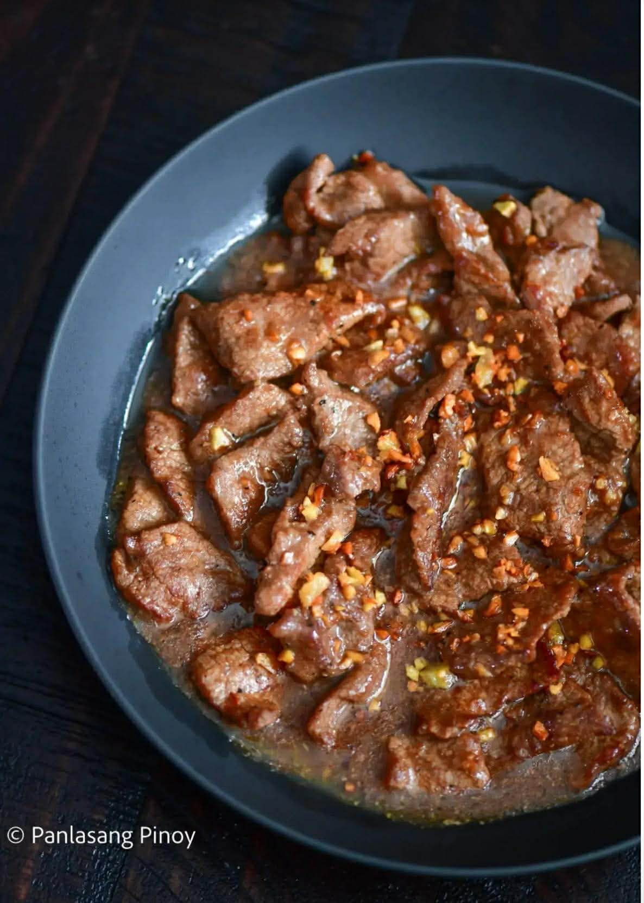

Ang Garlic Pepper Beef in Mushroom Gravy ay isang Filipino-inspired na ulam na kilala sa matapang na lasa ng bawang, anghang ng black pepper, at creamy na mushroom-based gravy. Ang beef ay niluluto muna hanggang maging malambot at flavorful, bago haluan ng rich gravy na gawa sa butter, harina, mushrooms, at beef broth. Perfect ito para sa family meals at bagay na bagay sa mainit na kanin.